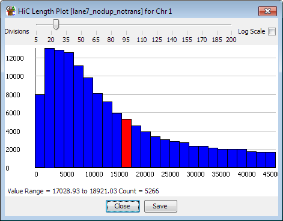

The HiC length histogram can be used to view the distribution of distances between opposing ends of HiC interactions. The plot is can therefore only be drawn from HiC data stores.

The plot only uses data from pairs of HiC ends which sit on the same chromosome. Pairs on different chromosomes are ignored. The distance plotted is the minimal distance between the ends of the individually mapped reads. Ends which overlap are shown with a distance of zero.
The plot can be drawn by selecting "Plots > HiC Length Histogram" from the main menu, or by right-clicking on a HiC data store in the Data view and selecting "Show HiC Length Histogram"
As with all histogram plots you can zoom into any region of the plot by dragging the mouse over a region of the x-axis. You can zoom out by pressing the right mouse button in the plot area.
When selecting this plot from the main menu you can choose whether to use all reads in the active datastore, or only those which overlap with the currently selected probe list.